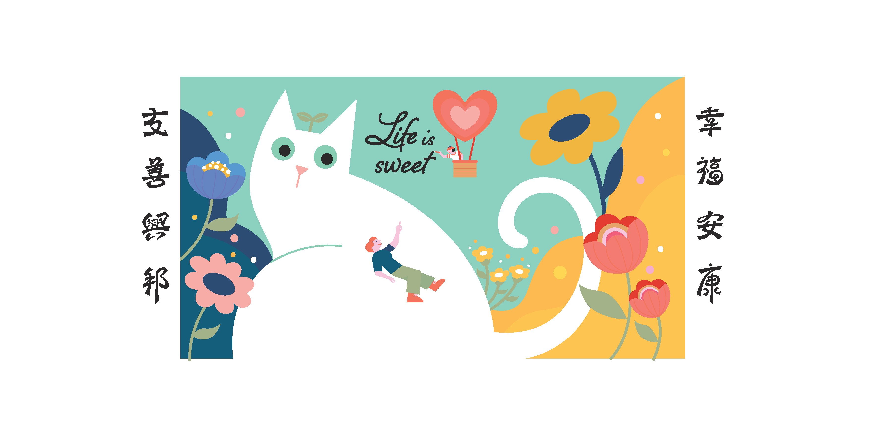
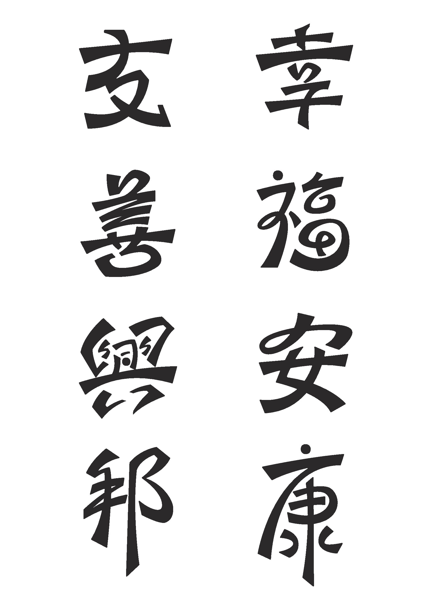
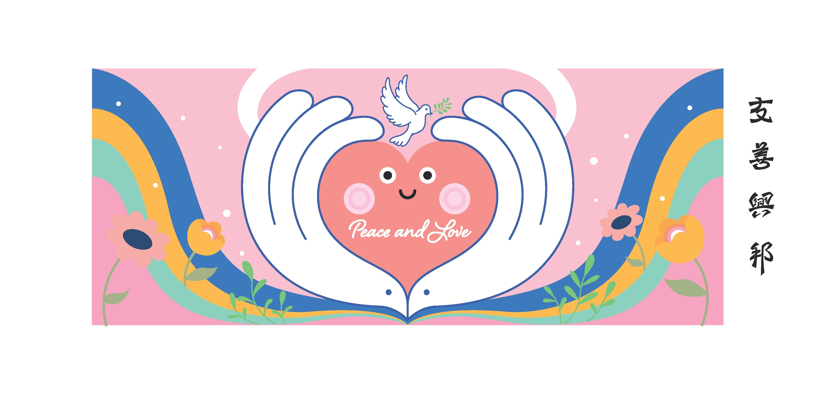
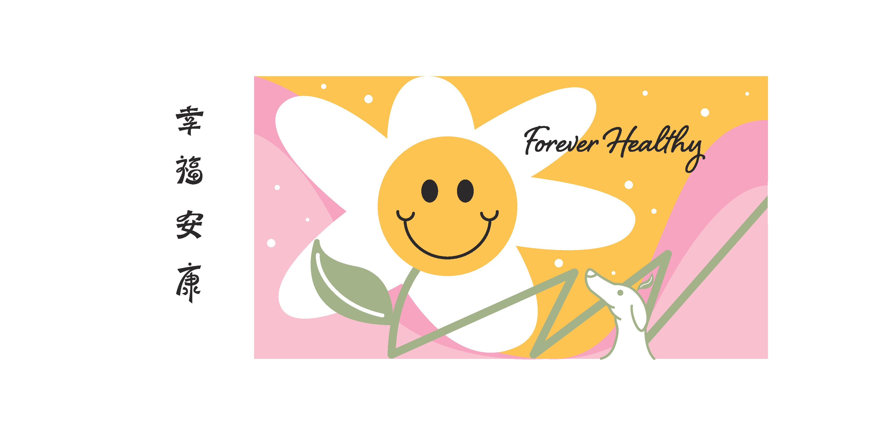
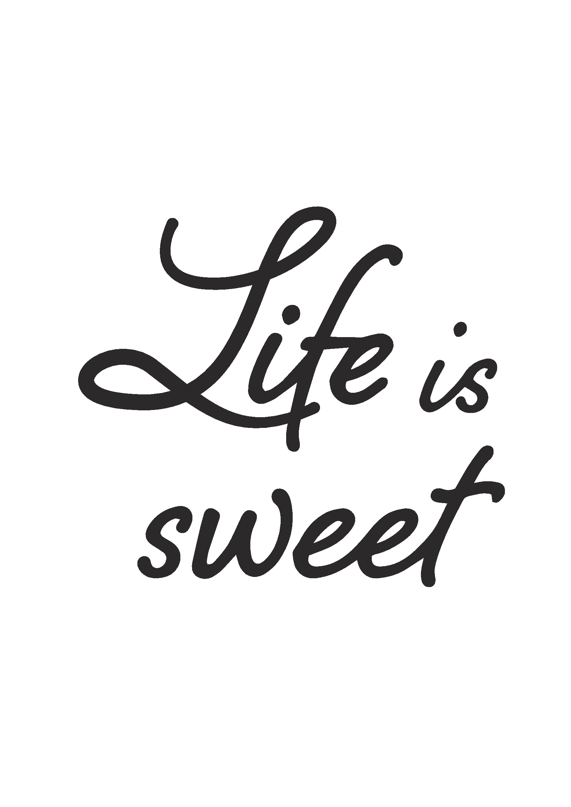

Friendly City, Caring Nation turns public-sector messaging into wall murals residents actually stop to look at — moving the message off paper notices and onto the walls they pass every day. Three mural panels, one shared spirit: peace and love, life is sweet, forever healthy.
把公部門的公共議題，轉化成一面居民會願意停下來看的社區牆面視覺。三幅主視覺、一個共同核心：友善、幸福、平安。讓政策訊息不再只是公告欄上的紙本，而是直接畫進居民每天走過的生活動線。

一般公告的問題不在於內容，在於它選擇的媒介。一張 A4 紙貼在公告欄上，對路過的居民來說，跟空氣沒有兩樣。它的存在邏輯是被動的：等著人靠近、等著人開口讀它。
The problem with typical government notices isn't the content — it's the medium. An A4 sheet on a bulletin board is invisible to passing residents. Its logic is passive: wait to be approached, wait to be read.
這次任務的核心是問：如果把訊息從紙本移到牆面，讓圖像直接長在生活動線上，居民會不會更願意多看一眼？為什麼需要繪畫牆面？答案是：美化里上，親近居民。美化，是提升環境讓人產生好感；親近，是平易近人，舒服自在。
The core task became: if we move the message off paper and onto a wall, making imagery part of the daily path itself, will residents be more willing to look? Why paint a wall? The answer: to beautify the neighborhood and bring residents closer — beautify meaning "elevate the environment so people feel good," closer meaning "approachable, comfortable, at ease."

「友善興邦，幸福安康」由三個核心概念構成——友善（Peace and Love）、幸福（Life is sweet）、平安（Forever Healthy）。每個概念對應一幅獨立的牆面主視覺，彼此在色調與插畫語言上相互呼應，組合成一套完整的社區視覺系統。
友善興邦，幸福安康 is built on three core concepts — 友善 (Peace and Love), 幸福 (Life is sweet), 平安 (Forever Healthy). Each concept corresponds to a standalone wall mural, mutually echoing in color tone and illustrative language — together forming a complete community visual system.
風格選擇以柔和色塊為主，角色設計走可愛親和路線——愛心、白鴿、巨貓、向日葵笑臉——都是讓人一眼覺得「這面牆很好看」的語言，而不是讓人聯想到政府公告的嚴肅形象。標準字採用手繪楷書，融合了硬朗的斬截筆畫與圓潤的書寫弧度，兼顧親切感與識別度。
Style choices favor soft color blocks and likeable character design — a heart, a white dove, an oversized white cat, a sunflower with a smiley face — all speaking a language that makes someone think "this wall looks great" rather than "government notice." The logotype uses hand-drawn kaishu, blending sharp-cut strokes with rounded curves, balancing warmth with strong recognition.
粉紅色調為底，兩隻捧起的手圍合成愛心的形狀，中央的心形角色帶著笑臉，白鴿從心形頂部飛起，左右對稱的彩虹弧線和花朵共同傳遞「友善」的暖意。「Peace and Love」以 Script 字型融入構圖，成為整幅視覺的情感錨點。
On a pink ground, two cupped hands shape a heart; the heart character at center smiles back at you; a white dove rises from the top; symmetrical rainbow arcs and flowers together carry the warmth of "friendship." "Peace and Love" in script lettering becomes the emotional anchor of the whole composition.

青綠與金黃雙色分割畫面，一隻幾乎佔滿畫面的巨型白貓坐在中央，小小的人物依靠在貓身上，遠處有愛心熱氣球緩緩升起。貓的存在創造了一種「尺度錯位」的溫柔——居民可以靠近、可以依靠，生活本身就是甜的。
Teal and gold split the picture plane; an oversized white cat takes up most of the frame, a tiny person leaning against it; a heart-shaped hot air balloon rises in the distance. The cat creates a gentle "scale mismatch" — something to approach, something to lean on, life itself is sweet.
向日葵造型的笑臉花朵佔據畫面中央，白色花瓣帶著金黃花心，粉色與橙色的大片背景讓整幅視覺充滿陽光感。右下角一隻小白兔與花莖並列，增添一分生活的細緻。「Forever Healthy」以手寫 Script 延伸在花朵右側，呼應永遠健康的祝願。
A sunflower-shaped smiley face dominates the center — white petals, golden center — on a warm pink and orange ground full of sunny energy. A small white rabbit and stems at lower right add a quiet note of everyday life. "Forever Healthy" in hand-drawn script extends to the right of the flower, echoing the wish for lasting health.

「友善興邦，幸福安康」八個字以手繪楷書呈現，筆畫保留了硬朗的斬截感，同時融入書法的弧度與起伏，讓字本身就有一種「認真但不嚴肅」的氣質。配合牆面尺度放大後，每一個字都能獨立成一個清晰可辨的圖像單位。英文部分「Life is sweet」同樣以手繪 Script 字型處理，與中文楷書在氣質上形成呼應。
The eight characters of 友善興邦，幸福安康 are rendered in hand-drawn kaishu — strokes that keep a sharp, cut quality while incorporating the arcs and swell of calligraphy, giving each character a feel of "serious but not stiff." Enlarged to wall scale, every character becomes a clear, independently readable image unit. The English "Life is sweet" is handled in hand-drawn script, echoing the kaishu in spirit.


設計稿完成後，志工與執行團隊帶著顏料和滾輪走進社區，把螢幕上的圖像一比一還原到實際的牆面上。從打底、放樣到細部描繪，每個環節都需要在現場依據牆面條件即時調整，確保完工後的視覺效果與設計稿的色彩語言保持一致。
Once the design was finalized, volunteers and the execution team brought paint and rollers into the community to reproduce the on-screen image 1:1 on the actual wall. From priming and gridding to fine detail work, every step required real-time adjustment to the wall's conditions on site, ensuring the finished visual matched the color language of the design.
這三幅牆面視覺做到了一件事：讓公部門的訊息不再只是被動等待被閱讀，而是直接成為居民生活空間的一部分。友善、幸福、平安——三個詞語、三幅圖像、一套完整的社區視覺語言，讓走過的人在不知不覺中，已經把這個訊息帶走了。
These three wall murals achieve one thing: making public-sector messaging no longer passively wait to be read, but directly become part of residents' living space. Peace and love, life is sweet, forever healthy — three phrases, three images, one complete community visual language. People who walk past have already carried the message away before they realize it.